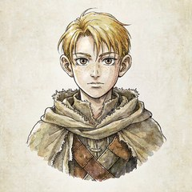

回放 · 暗相卷 第一章 Part 1

前情回顾：塞莱斯特和普绪克在黑暗里醒来，发现自己落在一处寂静的灰色空间。那里只有雾、断柱、半截台阶，还有一个坐在石座前凿着石柱的老者。离开那处空间后，两人出现在一片森林中，撞见了一场突如其来的凶案：一个穿暗红斗篷的男人被银灰重甲的骑士追到崖边。骑士声称要押他回教廷受审，那穿着斗篷的神秘男人似乎释放了什么诡异法术，骑士竟挥剑割断了自己的喉咙。
地面上躺着一具尸体。巨大的出血量告示着你们此人已无任何生还的可能了。
空气中弥漫着血腥的气息，鲜血渗入泥土中，形成了一摊摊的水洼。
 普绪克
普绪克呼吸急促了一些，一直拽着赛特莱斯的手松开，脊背弯下一些，手压在了自己的脖颈上。
感受着自己的呼吸起伏，才稍稍镇定了一点，声音低低的，像是怕引起其他人的注意。
“...我们，可以去有人的地方了....”
 塞莱斯特
塞莱斯特偷偷看向男人离开的方向，确认对方走远并记住方向后，自然的起身。
“嗯，再等一下。”
走到骑士尸体身边，先确认对方是否还有呼吸。
塞莱斯特走到这具铠甲的身侧，头盔之下只有寂静，没有任何呼吸的声音。由于他一身银铠，看不到腹部和胸部的起伏。
塞莱斯特确认对方真的死了以后开始脱对方的头盔和盔甲，看看对方身上有没有钱和其他个人物品。
普绪克“嗯....嗯....？”
迟钝了一下，看了看赛特莱斯，才小心翼翼的从阴影里过去，走到他身边。看着他要去摸人，伸出双手想拉住他，一时情急，语调急促而不完整表达着自己的意思。
“害怕，追我们！”
塞莱斯特“这是死人，不会动了。”
没有抬头，只是继续低头做自己的事情。
“你来放风，收获分你一半。”
普绪克“可是、…”听到放风时下意识观察了一下周围警惕了起来。
“他说会有麻烦，他都没有碰他！”
塞莱斯特“你提醒我了。”
收起手，在旁边寻找适合的木棍来挑开铠甲，先试试看反应。
普绪克警惕着周围。（检定 DC 10）
普绪克“嗯…”
塞莱斯特（大成功！）
（大，大成功了这就？）
普绪克（上一个骰子19，普绪克说下一个我再努努力）
塞莱斯特摸索着这具银色铠甲。（检定 DC 8）
跪下去摸索这具铠甲的时候，你的膝盖陷进落叶里，凉意顺着裤管爬上来似乎之前那场雨还没干透，泥土把你的重量含住，像含住一枚不该在这儿的东西。这位骑士仰躺着。旧银灰的甲叶上凝着一层薄水，横隙里不再冒白气了。
你伸手，先探他腰侧。甲裙和腰带之间有一道缝，指尖挤进去，先碰到粗布，再碰到一个鼓起的袋口——绳结勒得很紧，你用两根指头袋口夹住向外一拽，那袋东西一沉，直接坠到你掌心。
这牛皮袋里的东西沉甸甸的，袋身被撑得发圆，边角硌手——你还没解开来看。
再往里。胸甲内侧，靠左，有一处内衬的口袋。你的指节先碰到纸——软的，潮的，被体温焐过又被血浸过。你把它抽出来。
你摸到了一封信。纸角卷了边，封口没拆，却已经脏了：血从颈甲的缝隙里淌下来的时候，正好落在这儿，把信封染出一片暗褐。你指腹蹭上去，那片硬了，涩的，像干墨掺了香灰。
塞莱斯特获得：一袋铜币、一封信
就在塞拉斯特继续摸索的时候，普绪克用她极为敏锐的感知能力察觉到在远处的树后，大概三十步以外的距离，似乎有个人藏在那里，那人在树后喘息，声音不重，很轻，但似乎情绪很紧张。
普绪克“………”有人...
还有人...
他听到了！
他知道我们在这！
要杀了他吗？
他一定听到了！
微微睁大了一点眼睛，目光看着三十步的距离，小步的靠近赛特莱斯，手指轻轻的拉了一下他的衣服，随后，一边盯着那个没有露面的人，一边蹲下来，凑在赛特莱斯的耳边，用威尼斯亚语低声的说。
“那里，有人，偷看我们。”
头盔被你褪下，那是一张略显老态疲惫的脸。看上去有四五十岁的样子。他的颧骨很高，脸型有些骨瘦的沧桑感。
塞莱斯特记住了骑士的脸，将头盔放在地上，把钱收进衣服内衬缝制的口袋里，用厚实的衣服遮盖好钱袋的存在，正准备把信件拆开来看一眼里面的内容。
听到普绪克的话后抬起头。一边起身一边将信件塞入自己的衣服口袋。贴着普绪克，用手指比划着，小声用威尼斯亚语说道。
“你走左边，我走右边，我们包过去。”
普绪克听着他的话，点了点头，目光在地上看一看，这周围有没有尖锐的石头。
四周散落着不少拳头大小的石块，但是并没有尖锐的石头。
普绪克捡起一块干净一点的，拿得住的石头，小心的尝试不发出声音，从左边走包过去，在行进的过程中，注意着赛特莱斯有没有一起跟说好的那样动。
由于普绪克极为敏锐的感知力，提前发现了他的踪迹，那人似乎还没有反应过来，就已经被你们逐步逼近。
塞莱斯特跟着普绪克动起来，从右边靠近普绪克所说的方向，最开始蹑手蹑脚的靠近，快到时脚步放重一些，露出点声响，将人的逃跑路径压到左边的方向。
那人如惊弓之鸟一样跳了出去！他几乎快要撞到普绪克了，此时他又想回头，发现塞莱斯特将他的后路几乎堵住了。
至此，在阳光下，你们看清了他的面容。
这是一个年轻人。身量不高，裹着一身灰扑扑的旧衣，外套的肘部磨白了，金黄的一头乱发，他的脸是脏的——泥点蹭在颧骨上，下巴上有没擦净的污痕。他的眼睛睁得很大，瞳孔缩着，像是惊慌的野兽。他还在喘。胸口起伏得很急，肩膀一耸一耸，嘴唇动了动。

你，你们别动！
他的腰间别着一把短剑，他的身高和塞莱斯特差不多。
普绪克“啊！——”
发出了比他更像是被吓到的尖叫声，下意识的把拿着石头的手往他的方向用力挥了一下，很快缩回来，身子往前倾，像是下一秒就要扑过去了一样。
塞莱斯特打量了眼他身上的痕迹。和他腰间的短剑，没有再靠近，而是举起双手自然的摊开。表示自己没有在动。
“你在这里做什么？”
你问我？
他瞪大眼睛看着你们。他向后退了两步，熟练的抽出短剑对着你们。
你这个凶手…
他又将剑指向普绪克。
还有，还有你这个帮凶！
塞莱斯特歪头看了看他的眼睛，伸手在他眼前挥了挥。看看他的眼睛是否会跟随自己手的动作而移动。
普绪克死死盯着这个陌生人，在他对向塞莱斯特的时候蹿向他，石头砸向他持匕首的手腕，尝试把武器给弄下来。
我要先通知民兵队…不，不行…那样就太晚了……我要面对两个吗…
就在他喃喃自语的时候，他看到你朝他挥了挥，他看着你的手，眼睛随着你的手在移动。
精准砸手腕，AC 16。普绪克是趁他正对着塞莱斯特的时候砸上去的——他的注意力在塞莱斯特上，没看你。有优势，掷 2d20 取高。d20+3（敏捷修正值）两次。≥16就算成功。
你抡下去的时候，这位少年正把脸扭向塞莱斯特。他的注意力全在前头，没看你。
你带着石头砸过去——
他的余光扫到，猛地一缩肩，整个人往侧里歪开。那不是看清了才躲的熟练，是惊出来的本能。你的攻击擦着他灰旧外套的肘部划过去，只刮下一缕磨白的线头。
他踉跄一步，喘得更急了，眼睛终于落到你身上。
普绪克攻击落空（15 / 5，取高 15 < AC 16）。少年闪开，未受伤。
你不要再动了！你要是再做什么，我就对你不客气了！
少年手中的短剑一会儿指普绪克，一会儿又指向塞莱斯特。
你手里的石头，丢掉！现在！
少年对普绪克大声喝斥着。
普绪克“我才要对你不客气！”
压低的声音又尖又细，盯着他的手喊道。
“丢掉你的匕首！不然杀了你！”
塞莱斯特目光在他们两人之间来回。语气疑惑道。
“为什么要这么剑拔弩张？”
指了指少年。
“他的视力没有问题。”
又指了指普绪克。
“她连你手上的剑都打不掉。”
丢掉这把剑？
少年摇摇头。
这不可能，除非我死。
少年转头看向塞莱斯特。
你还要问为什么？你没看到你现在的样子吗？你手上沾的血足够说明一切了吧？
塞莱斯特“我？”
看了看自己的手。随后看向少年。
“我刚刚在尝试挽留一条生命，只是很可惜，我不会医术。”
“你过去看看不就知道了。”
“剑伤，我们可没有凶器。”
她，她刚才也说，要杀了我。
少年看向普绪克。
塞莱斯特看着少年手里的短剑。
“答案不就在你的手上吗？”
凶器…
少年看了看普绪克手中的石块，这石块若不是精准砸头，明显构不成什么伤害的样子。
普绪克“他先用武器指我们！”
听着塞莱斯特的话喊道，抓着石头的手没放开，眼睛盯着那把匕首。
“他说不客气，是坏人！”
那，那你们是镇子上的人？
少年试探性的问道。
塞莱斯特“看吧。”
对普绪克的话，理所当然的向少年附和道。
“显然不是。”
同样理所当然的回答道。
普绪克慌乱的情绪在赛特莱斯的话下稍微掺进来一点冷静，虽然还是感觉有什么在心口乱撞，但仍然保持了缄默，目光注意着少年的身上有些什么，考虑着他的身份。
那你们从哪里来，来崖镇这里做什么？
少年追问着。
你把目光落在这少年身上，从头到脚过了一遍。
他穿的是一身灰旧平民衣。外套肘部磨白，前襟沾着泥和草屑，下摆湿了一截——似乎是刚刚蹲在树根后头那阵子蹭的。里头是件旧衬衫，领口敞着，没系好。裤子膝盖处磨得发亮，靴子是旧的，鞋带松了一根，鞋帮上全是湿泥。
他的腰间系着剑带，衣服朴实到连护腕都没有，他的外套口袋是瘪的，你盯着看，只看出布料被撑出的空褶子，不是装了东西的形状。
他两只手就这样举着短剑，微微发抖，他没戴戒指，没戴什么黄铜饰物。脖子上没有链子，怀里也没有鼓起的轮廓——隔着旧外套，你只能看出一个瘦削的、还在急喘的胸廓。
塞莱斯特“我们是流浪者。”
“靠拾荒和流浪为生。”
“流浪的人不需要记住上一个地方，永远都是当下。”
同样理所当然回答道。
“你又是谁？在这里做什么？”
流浪者…
他将剑插回到剑带上。
我叫科尔，是崖镇巡逻小队的人。
（可调查，本次DC5）
普绪克他很穷。
随着自称科尔的人收回剑，慢慢慢慢的，把绷直的手往下放一点点，一点点垂下，收回到身边。
…很穷的人也有工作吗？
这个地方也很穷？
你们都注意到他在介绍自己的时候并不是很自信，甚至在介绍自己是巡逻小队的时候明显的有些低声。
塞莱斯特听到他的话，疑惑道。
“一个人巡逻？”
“在这里？”
普绪克骗子。
他是骗子。…
捏紧了石头，在心里犹豫了一下。
骗子…不干净。
是好事。
好麻烦。
赛特莱斯，好用。
他的脸瞬间红了。
为什么不能一个人巡逻？！镇子上的人本来就不算多……
总，总之，是我误会你们了，我道歉，对不起。
他皱着眉，随后鞠了一躬。
塞莱斯特看了看对方的动作，弯下腰，看鞠躬的他。
“请我们吃一顿饭。”
“这样我们就接受你的道歉。”
“你把她吓坏了。”
指了指普绪克的方向说道。
普绪克用力的，毫不犹豫的点头。小声的附和。
“害怕。”
吃饭吗？这倒是没什么问题…家里有在煮饭。我们边走边说吧…我们要快一点，我要将这里的事情汇报给民兵队。
塞莱斯特“你不用先确定一下这个人的身份吗？”
歪头问道。
普绪克目光投向了赛特莱斯的方向，又看向科尔的方向。
想到。
赛特莱斯更像巡逻队的。
啊…我……
他挠了挠头。
我觉得还是先汇报给民兵队…会比较好吧……其实我也不是很熟……但是我知道那个人是骑士，如果你们真的是凶手，那你们一定会知道自己惹上了多大的麻烦。
那可是骑士团的人…
普绪克“我们，杀，骑士？”
语气里充满了疑惑。
“骑士团？”
塞莱斯特“我想，凶手应该是不会想和‘巡逻队’的人，回家吃饭的。”
压重了巡逻队的词。
少年头也不回走在前面，将背后完全留给了你们。
我知道的，所以我相信你们，毕竟要杀死骑士团，总不会用石头砸过去吧……
普绪克在科尔转过身后，稍稍抬头看向赛特莱斯。
指了指原本死人的地方。
塞莱斯特“嗯。”
发出思考的声音，眼角瞄了眼普绪克的动作，想了想。
“那可能需要压垮一个屋顶的石头吧。”
“这里回去远吗？”
普绪克垂下了手，乖乖的站着，等赛特莱斯动。
离我住的地方不远，没几步的。
科尔回应着。
这里没什么可以乞讨的，你们要是乞讨就去镇子里，镇子里还是有很多好心人的，都会愿意帮助流浪者的。
塞莱斯特“那你给我指一个方向吧，我去解决一下喝水过多的问题。你们先走。”
普绪克“不…不要！”
“我、我要等你！”声音里带着些急切，往赛特莱斯的方向走了两步。“让我等你…！”
随便都可以啊…那我们在这里等你。
科尔扭过去。
塞莱斯特“哦。那好吧。”
说着往远一点的方向走去。
普绪克目光看了看赛特莱斯走远的方向。
“科..科尔哥哥....”
走上前，拉住了科尔的外套边缘末尾的一点点，声音发抖，和他搭着话，尝试不让他有机会回头。
“镇子..人好吗？....好害怕....”
“好多..好多血...呜.....”
“刚刚…对不起…你能原谅我吗？....”
啊？！？？？啊？？啊啊？你，你别……
科尔的脸瞬间红到了脖子根，他整个人呆住了。
我，我没有埋怨你啊…我还不知道怎么称呼你…
普绪克“真的吗？”稍稍抬起一些头，看到了他与刚刚不同的脖颈的肤色，继续努力道。
“...谢谢你，没有讨厌我。…”
“莉芙...”
声音低低的，从嗓子里冒出来，仍然拉着他的衣摆。
“你可以叫我莉芙...”
莉芙…你，你离我有点太近了……我们不用……不用这么近的……
科尔又往后退了几步。
普绪克“啊…”轻轻的应了他一声，茫然的上前一步，有些失落的说。
“可是....”
“莉芙好害怕...”
“我好害怕...”
不不不…莉芙…你，你不能靠我这么近…我们还是保持距离，保持一下距离……对……
科尔走到前面更远的树下去了。
普绪克“那....”看着科尔的背影，眼里满是失落。
为什么不能靠近我呢…？
“那我在这里..等他回来...”
顿了顿，向他确定。
“可以吗？”
可以，当然可以了。
科尔长出一口气。
塞莱斯特从一旁的树下走来，重新回到了视野之中。
科尔站在远处的树根下，他回过头对你们摆摆手。
要走了！
塞莱斯特回到人群后看向他们之间的距离。
“好远。”
“走吧。”
跟上科尔重新启程
普绪克立刻迎了上去，重新牵住了他的手。附和着赛特莱斯的话。
“好远。”
塞莱斯特低头看了眼普绪克牵过来的手。手上沾着血迹和泥巴。疑惑道
“为什么要牵着？”
普绪克低着头看着地上的路，捏着他的手，小声的回答。
“想要。”
塞莱斯特“哦。”
得到答案后就没再管她。任由她牵着，收回目光，脚步跟上科尔。
普绪克亦步亦趋的跟着他一起往前。
科尔走在前面。他的步子还是快的，他的肩背松下来了，神色也没有紧绷，只是他还会时不时回头看，很快，眼神在你们身上停了半息，又转回去。
你们跟在科尔的身后，入秋的林子往深处去，参天大树一棵接一棵，树干粗得两人合抱不过来。树皮是深褐的，裂着纵向的沟，沟里积着隔夜的雨水，手一碰就凉。树冠在头顶合拢，天空都成了斑驳的碎块，你们能看到在枝条错开的地方漏下几道斜光，光是薄的、金里发白的，斜斜插进林间，照在湿落叶上反出一层钝亮。
空气微凉，地上全是被风吹落的枯叶。枯叶被雨泡过，踩上去不是脆响，是闷的、软塌塌的一声。脚下的泥含着水，每一步都把靴底沾成厚厚一层，走两步就得甩一下。
走了约一百多步，树开始稀了一点。光斜过来，落在前头一片平上——那儿有一道木栅栏，歪了两根桩，后头是小屋的一角：斜顶，木板墙，屋顶铺着干草，烟囱里没有烟。
科尔在屋子前慢下来。他抬起一只手，指了指那屋子，
就是这里了。
风从林子那头过来，一片黄叶翻过他的肩。
这里就像是隐藏在林间的休憩小屋，此刻，光都是慵懒的。
小屋门口的空地上，有一小撮的篝火。
火并不是刚生的。火堆底下压着一层烧透的木炭，白灰边儿泛红，似乎是今早才续了柴——几根粗树枝斜插着，橘色的火焰不高，贴着柴燃烧，火上头悬着一口黑锅。
普绪克目光观察着这个地方…
回忆着斗篷人离开的方向与这里的方向有多大差别。
“要..先吃饭吗？”
锅里明在煮东西。水沸腾着，白汽“噗”地顶开锅盖缝——锅盖是块旧木板，歪着盖，留了一道指宽的缝。汽从缝里挤出来，被风一带，直往你们脸上扑。
但，那股锅中的菜香是最先到的。
不是一种。是热的、潮的、带着油的一整团，扑到鼻子里，先甜后咸。
似乎是洋葱综合了奶油的香气，以及，还有肉质浓郁的香气。
塞莱斯特打量着这间屋子，目光落在科尔肩头的一片黄叶。跟着走进屋内。看看这里还有没有其他人居住的痕迹。
这间屋子很小，你一脚踏进去，发现这里就像一个蘑菇屋，一张桌子，一张椅子，还有一个小柜子和一张床，就什么都没有了。四面的墙体都是木板，原色的，没上漆，缝隙里那些绿色的你看了看，似乎是塞着的干苔藓，一般用来挡风。屋顶很低，地面是夯实的土，被踩得发亮。
普绪克比普绪克还穷。
环视了一下屋子，想到。
窗在进门左手边，小，方形的，透的，没有遮挡。斜光穿过它，落在地上。而在一面墙上，你看到这面木板墙上钉了几个木橛，挂着一口袋、一件旧外衣、一串干蘑菇和几束看起来应该是草药的样子，或者只是野菜？你分不清。
然后你看见那张地图。
它挂在正对门的墙上。
地图不是纸的。是皮的，这是一张鞣过的、发黄的小羊皮，四角用铁钉摁进木板墙。边角卷了，被屋里的烟火熏成深褐。皮面不平整，有折起来的痕迹。
我这里，没什么参观的价值了。我不是一个有钱的人…不然一定会给你们帮助的，我知道你们这个时候或许缺的不是别的，只有钱才能真正的帮助到你们。
毕竟冬天就快到了…
冬天很冷，也没什么人会愿意多花一些耐心去救济流浪汉的。
普绪克目光看着那张地图，辨别着上面的地理环境，判断着这种字符和红袍人的一不一样。
这个字…我会看得懂吗？
塞莱斯特“看的出来，你没有余力。”
打量着屋内说道。
“不过一顿饭足够我们撑过一天。”
你可以判断出来，字符是一样的。
嗯嗯，我煮了一些草鸡肉鲜奶油洋葱汤。
普绪克完全看得懂…
目光看着地图，默默的尝试把它背下来。
塞莱斯特是不能走很远的炖菜。
“你是听到有动静才去巡逻的吗？”
科尔看着普绪克盯着地图，他走到地图前，小心翼翼的将地图取下来，随后递给了普绪克。
我看你们的样子好像是不太认路，不然谁会来到这里乞讨呢？你这样很危险，会遇到坏人…或者……野兽。这份地图是我父亲留下的，可能有点旧……
科尔看向塞莱斯特。
是啊，因为这里平常没什么人来，所以我听到有人接近就追出去了。现在想想，根本不太可能是你们，因为我当时只听到两个人的声音。其中一个就是那个骑士。
塞莱斯特“既然是骑士都解决不了的人。最近你还是别去林子里巡逻了。”
普绪克看着科尔走过去，露出来了一点意外的神情，慢慢松开了一只手，在赛特莱斯的手背上蹭了一下，抹掉可能会有的血，摇了摇头。
抬起手握住地图的边缘，小心翼翼的接过来。
“谢谢你......”
“地图，很有用。”
“是很好的东西。”
我还挺不好意思的…这样误会你们，差点将一条人命算在了你们的身上。以后我会问清楚再下定论的，真的很对不起。
普绪克获得：泰瑞拉城邦地界图
不用谢我的，我不喜欢被人冤枉的滋味。那种滋味并不好受。但我今天却这样对别人做了，还真的是……
科尔自嘲笑了笑。
塞莱斯特抬起手看了看自己被当抹布的手背。用另一只手擦了擦。随后重新垂下。
“你让我们吃了一顿饭。算抹平了。我不在意。”
“你经常被人冤枉吗？”
普绪克不擅长对待这种事，稍稍抬起头看看赛特莱斯，在他回答后点点头充作附和。
说到巡逻，我觉得还是打算要和民兵队汇报的，如果他们需要巡逻，我还是要去的，骑士都死在这里，不就说明事情更加严重，镇子上的人更加危险……
“嗯？”科尔被塞莱斯特打断片刻。
我…没……
也没有经常吧……
光顾着聊了，出去吃东西吧。
科尔走出屋子。
塞莱斯特“嗯。”
没有多说什么，跟着先走出屋子。
普绪克稍稍抬起一点头，试着听科尔的声音判断一下他否决赛特莱斯时是什么情绪。
安静的收好地图，把它贴身放好后跟上他们。
调查DC，4
那是一种相反的情绪，你可以从他的言语中听出他似乎确实是经常被人冤枉的，在这个事情上，他更多认为自己是被塞莱斯特说中了。
你们走出小屋，看到科尔已经端着三个碗在分别装着汤，香气四溢。